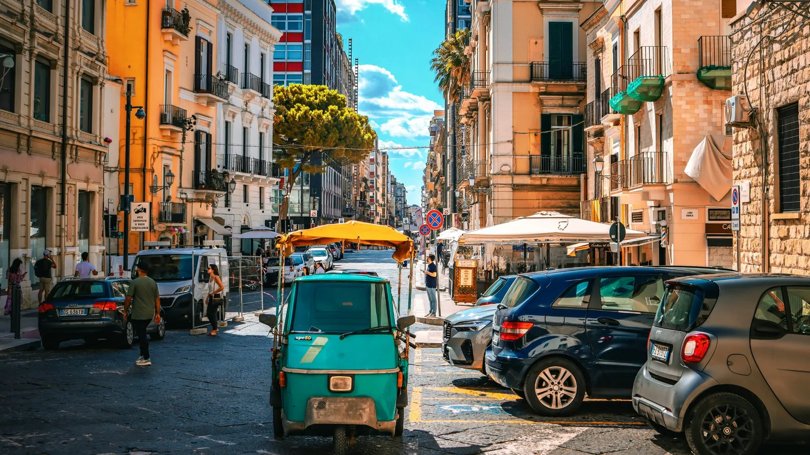

The short answer
Bring your licence, an International Driving Permit if your licence is from outside the EU, and a credit card in the driver's name for the deposit. Pick up the car outside the big historic centers, keep out of ZTL zones and pay motorway tolls at the booth on the way out.
Do you actually need a car?
For Rome, Florence, Venice, Milan and Naples: no. Fast trains link them in 1–3 hours and a car is only a cost (parking, ZTL fines). A car makes sense for Tuscany's countryside, Puglia, Sicily, Sardinia, the Dolomites and the Amalfi Coast hinterland, where buses are rare.
Documents and age
- Driving licence held for at least 1 year (some companies ask 2–3 years for bigger cars).
- International Driving Permit (IDP) if your licence was issued outside the EU/EEA (for example USA, Canada, Australia). Rental desks don't always ask, but the police can — and fines are heavy without it.
- Passport or ID card.
- Credit card in the main driver's name. Debit and prepaid cards are often refused for the deposit.
- Age: usually 21+ (sometimes 18+ for small cars); drivers under 25 pay a young driver fee.
Insurance and deposit
In Italy, basic third-party liability, collision damage (CDW) and theft protection are normally included in the price — but with a high excess (often €1,000–2,500), which is blocked on your credit card.
| Option | What it does | Good to know |
|---|---|---|
| Basic (included) | Covers damage and theft above the excess | Big deposit blocked on the card |
| Zero excess at the desk | Reduces the excess to €0 | Easiest, but the most expensive per day |
| Third-party excess insurance | Refunds you after a claim | Cheaper; you still need the full deposit |
Glass, tyres and the underside of the car are often excluded from basic cover: read that line before you sign.
Road rules and the fines tourists get
- ZTL (limited traffic zones): most historic centers are closed to unauthorised cars and filmed by cameras. Each pass through a gate is a separate fine, sent months later via the rental company with an admin fee. Read ZTL in Italy: how to avoid fines.
- Speed limits: 130 km/h on motorways (110 in rain), 110 on main dual carriageways, 90 on other roads outside towns, 50 in towns (often 30 in city centers).
- Speed cameras: fixed cameras, mobile units and the Tutor system that measures average speed between two points on motorways.
- Headlights must be on outside built-up areas, also during the day, on motorways and main roads.
- Alcohol: 0.5 g/l, and zero for drivers with a licence held for less than 3 years.
- Parking lines: blue = paid, white = usually free, yellow = residents/disabled only.
Motorway tolls (autostrada)
- Take a ticket at the entrance booth.
- On exit, use the lanes marked with the white card / cash or card signs.
- Never use the yellow Telepass lanes unless your car has the device.
- Rough cost: about €7–8 per 100 km for a normal car.
Fuel and parking
- Benzina = petrol, gasolio = diesel. Check the label inside the fuel cap.
- "Servito" pumps cost more than "fai da te" (self-service) ones.
- Choose a full-to-full fuel policy and keep the last receipt near the return point.
- In cities, park in a garage outside the ZTL and walk or use public transport.
Pick-up and return tips
- Pick up at an airport or train station on the edge of town, not in a historic center.
- Film the car all around (and the fuel gauge) before you leave the car park.
- Rent a small car: village streets and parking spaces are narrow.
- Automatic cars are fewer and cost more: book early if you need one.
Prices and rules are indicative and can change — always check with your rental company before you travel.
Ready to book?
Affiliate links: if you book, 687 may earn a commission at no extra cost to you.
Train for the cities, car for the countryside.
In 687 Italy every stage of the trip keeps its own transport: Check trains for the city legs, Navigate for the days on the road, and NOW plans the free hours of each day around where you actually are.